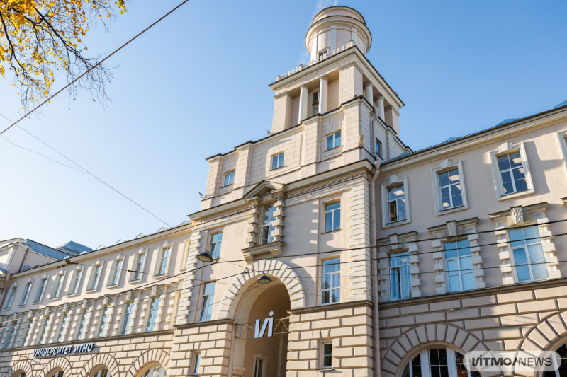
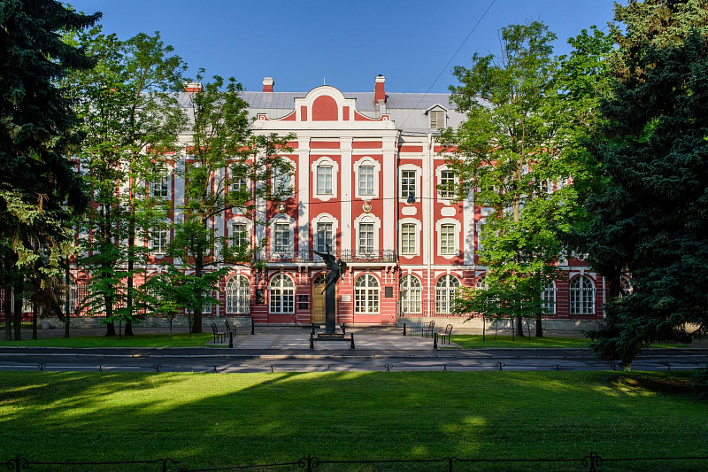
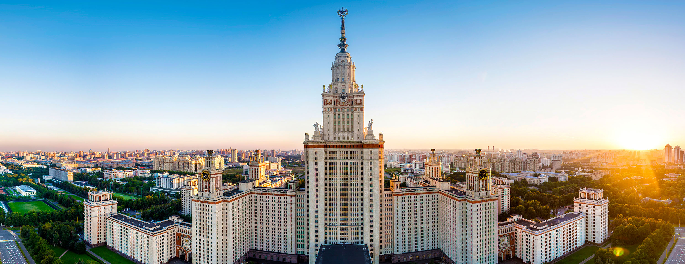
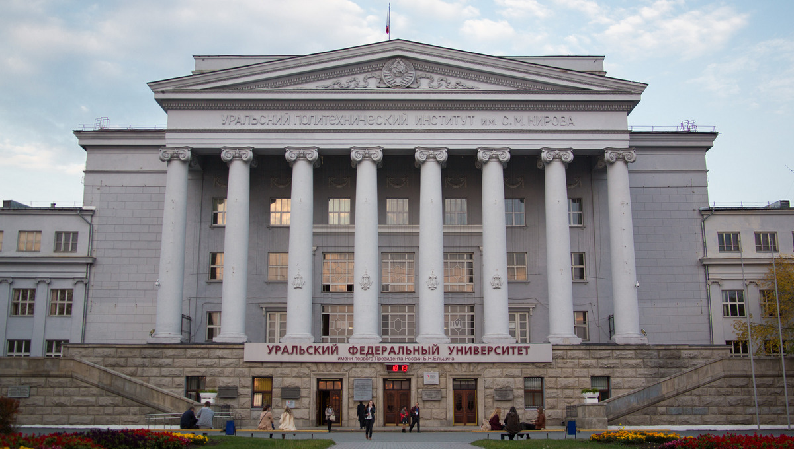

Поступление без лишнего стресса и ошибок — это к нам!
Мы объединили всю необходимую информацию для безупречного приёма в вуз на одном едином сервисе. Наш продукт будет актуален абитуриентам и их родителям, с нами вы можете быть уверены в каждом шаге. Максимум пользы с экономией вашего времени. Будьте спокойны за свои результаты!
Ключевая фишка нашей платформы — чат с умным AI-агентом, готовым ответить на все ваши вопросы, связанные с поступлением.
100% надежно: AI-агент использует базу данных, содержащую только проверенные документы с официальных источников. Благодаря этому вы можете быть полностью уверены в полученных ответах: они всегда будут точными и достоверными.
Рейтинговые университеты
Познакомьтесь с ведущими вузами России и получите подробную информацию о каждом из них!



